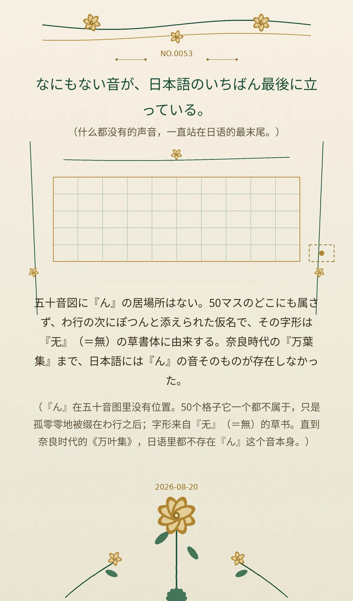

なにもない音が、日本語のいちばん最後に立っている。 （什么都没有的声音，一直站在日语的最末尾。）
五十音図に『ん』の居場所はない。50マスのどこにも属さず、わ行の次にぽつんと添えられた仮名で、その字形は『无』（＝無）の草書体に由来する。奈良時代の『万葉集』まで、日本語には『ん』の音そのものが存在しなかった。 （『ん』在五十音图里没有位置。50个格子它一个都不属于，只是孤零零地被缀在わ行之后；字形来自『无』（＝無）的草书。直到奈良时代的《万叶集》，日语里都不存在『ん』这个音本身。）
216f6c2a9c176980冷知识由执笔的模型自行查证。逐条断言、来源与所引原句存档在纯文字副本里，未经程序逐字校验，留作事后核实。